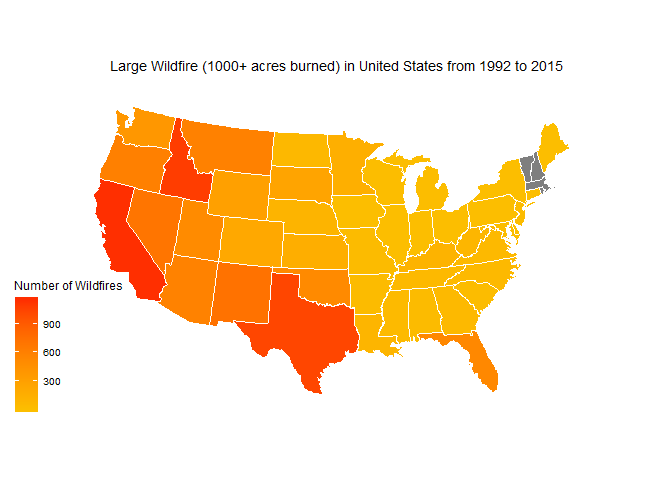
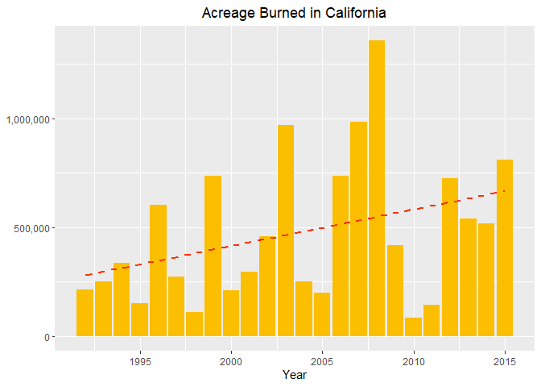

Data Analyst and Programmer
Located in Orlando, Florida
Hello, my name is Aaron Long and welcome to my portfolio website. My portfolio contains data analytics projects that I've worked on throughout the years. Some of my projects include data analysis, advance plotting on maps, and machine learning. I enjoy creating projects on topics that interest or is relevant to me, such as finance, healthcare, current events, and any random data that interests me.
I recently moved to Florida in October 2019, and am currently living in Orlando. I graduated in 2016 at University of California, Davis with a Bachelor's of Arts and Science in Economics and Statistics. I'm extremely interested and passionate about data analysis, finance, and the blockchain.
More personal details about me is that I have a cute dog named Clover and she is a four year old Papillon, who looks like a border collie puppy. Also I vlog with my girlfriend on a YouTube channel called the happybaabes!
February 5, 2020
 Libraries Used: gglot and leaflet
Back in 2017, the Tubbs Fire in Santa Rosa had not only destroyed my family’s home, but also completely destroyed our neighborhood. With losing 95% of our belongings including irreplaceable photographs and mementos, it was a truly devastating event that traumatized me and my family.
For this report, I am exploring a dataset on the 1.88 million wildfires that occurred in the US from 1992-2015.This dataset can be found in Kaggle: https://www.kaggle.com/rtatman/188-million-us-wildfires. I will briefly look at all the data then dive into large fires only. This means fires in class size F (1000-5000)acres burned and size G with is wildfires burning over 5000+ acres. Some of the largest fires in CA for example burned hundreds of thousands of acres. I want to focus on California and Florida as this is where I live now and where the data would be most relevant to me.